Make this Notebook Trusted to load map: File -> Trust Notebook
Cadre méthodologique et contexte environnemental
Déploiement des enregistreurs
Durant l’été 2025, 32 enregistreurs de type audiomoth ont été posé dans la RNCFS de Belledonne. Leur emplacement est visible sur la carte ci-dessous.
Cette carte montre la localisation des enregistreurs acoustiques déployés en 2025. Cliquer sur un point por avoir le nom de l’enregistreur associé.
Les enregistreurs ont été posés mi-juin 2025 avant l’arrivée du troupeau de brebis de l’âne. Deux maintenances ont été effectuées durant l’été et la récupération s’est faite début-octobre. Sur la figure 2, le début et la fin d’enregistrement de chaque audiomoth.
---
config:
logLevel: 'debug'
theme: 'neutral'
---
timeline
title Timeline des maintenances terrain
16 juin : Pose
21 juillet : Maintenance 1
19 août : Maintenance 2
2 octobre : Récupération
NotePériodes de fonctionnement des enregistreurs AudioMoth
Météo
La figure 3 nous montre les précipitations et la température relevés par la station météo de l’âne. Une courbe fine toutes les 10 minutes est disponible ainsi qu’une variation journalière.
Précipitation et température relevé par la station metéo de Belledonne
Répartition de l’utilisation de l’espace des brebis et des bouquetins
NoteDétails méthodo chargement domestique et bouquetin
Bouquetins
Toutes les localisations GPS des bouquetins sur le site de Belledonne, de 2017 à 2025, ont été utilisées, mais seules celles comprises entre juin et octobre ont été conservées. Les données ont été filtrées spatialement pour ne retenir que les points situés dans la zone d’étude. Pour éviter la surreprésentation temporelle, un sous-échantillonnage a été appliqué, ne conservant qu’une localisation toutes les deux heures par individu. Ces coordonnées ont ensuite servi au calcul de la densité d’utilisation de l’espace (Kernel Density Estimation, KDE) avec la fonction kernelUD du package adehabitatHR. Un KDE global, intégrant tous les individus, a été généré avec une largeur de bande automatique (href) et une grille de résolution adaptée, produisant une surface continue représentant l’intensité d’utilisation de l’espace par les bouquetins. Nous avons en sortie deux map chargement et iso pour toutes les années combinées que pour juin à octobre mais également ces deux mêmes map pour l’année entière. Et nous avons donc un chargemnt en animal.day autour des capteurs acoustiques (rayon de 50m) dans etude_2026/chargement_bouquetin_jour_global.csv. (code Calcul_KDE_bouquetin.Rmd)
Brebis
Les données GPS des brebis ont été traitées afin de quantifier l’utilisation de l’espace et la présence des animaux autour des capteurs acoustiques.
Nettoyage des données : Les positions GPS situées hors de la zone d’étude ou présentant des erreurs de positionnement (dop > 5) ont été exclues. Les points impliquant des vitesses supérieures à 4 m/s ont également été retirés afin d’éliminer les anomalies liées au GPS.
Rééchantillonnage temporel : Les positions des colliers ont été rééchantillonnées à intervalles réguliers de 15 minutes. Pour chaque timestamp régulier, le point GPS le plus proche dans une fenêtre de ±5 minutes a été conservé et son temps ajusté au timestamp standard.
Calcul du barycentre quotidien : Pour chaque jour, la position moyenne du troupeau a été calculée à partir des colliers disponibles. Les coordonnées du barycentre (x_center, y_center) ainsi que l’écart-type des positions (x_sd, y_sd) ont été estimés, fournissant une mesure de la dispersion du troupeau. Les journées comportant moins de trois colliers ont été exclues pour garantir la fiabilité des estimations.
Trajectoires et rediscrétisation : La trajectoire quotidienne du barycentre a été représentée à l’aide d’objets ltraj du package adehabitatLT. Ces trajectoires ont ensuite été rediscrétisées à intervalles fixes de 15 minutes via la fonction redisltraj.
Quantification de l’espace utilisé (BBUD) : L’espace utilisé par le troupeau a été estimé à l’aide d’un Brownian Bridge Utilization Distribution (BBUD), calculé avec la fonction kernelbb du package adehabitatHR. Le paramètre sig1 a été estimé via la fonction liker et sig2 a été fixé à 25, correspondant à la précision GPS. Les résultats ont été convertis en raster représentant le nombre de brebis·jour par hectare, multiplié par l’effectif total du troupeau. Un seuil basé sur le 90ᵉ percentile a été appliqué pour éliminer les zones très peu utilisées.
Extraction autour des capteurs : Pour chaque année, le nombre de brebis·jour a été calculé dans un rayon de 50 m autour de chaque capteur acoustique (ici ceux de 2025) et enregistré dans le fichier chargement_brebis_jour_global_par_capteur_implementerwithyear.csv.
Présence instantanée autour des sites : La présence de brebis pour chaque intervalle de 15 minutes a été évaluée pour 2023 et 2025. Une matrice binaire a été construite indiquant, pour chaque site et chaque timestamp, si au moins une brebis se trouvait à moins de 50 m du capteur. La méthode repose sur l’estimation de la dispersion du troupeau à chaque instant. À partir du barycentre et des écarts-types en X et Y, un rayon de diffusion du troupeau est calculé (racine carrée de la somme des carrés des écarts-types), servant à définir la zone de couverture autour du barycentre.
Ce rayon de diffusion est ajouté à chaque point de trajectoire et des règles spécifiques sont appliquées pour les périodes nocturnes (19 h–4 h) et pour les valeurs manquantes : les points nocturnes se voient attribuer un rayon fixe, tandis que les autres valeurs manquantes sont complétées par la dernière valeur connue. Une matrice de distances est ensuite calculée entre tous les points et tous les sites, et la présence du troupeau est déterminée en comparant cette distance avec le rayon effectif du site (50 m + rayon de diffusion). Le résultat est une matrice binaire indiquant la présence ou l’absence du troupeau pour chaque intervalle de 15 minutes et chaque site. Les résultats sont enregistrés dans presence_parfichier15minutes_parcapteur_2025.csv et cumulés par jour dans presencecumule_parjouretsite_2025.csv.
Utilization Distribution journalier : Pour chaque journée, le BBUD a été calculé et les valeurs extraites pour chaque capteur. Les cartes quotidiennes ont été enregistrées au format PNG, et les résultats journaliers sont sauvegardés dans chargement_brebis_jour_par_jour_et_capteur_2025.csv.
Organisation du code : Le script propre pour 2025 est disponible dans propre_2025_Calcul_UD_centre_brebis2025.Rmd. Pour le cumul de toutes les années et la moyenne des rasters annuels, le code est dans domestique_all_year.Rmd, avec les résultats stockés par année dans chargement_brebis_jour_global_par_capteur_implementerwithyear.csv.
Chargement des brebis en cumulé sur les années 2018 à 2025

|

|
Chargement des bouquetins en cumulé sur les années 2017 à 2025 (uniquement sur les mois de juin à octobre)

|

|
Zoom sur la répartition de l’utilisation de l’espace des brebis pour chaque année
chargement :
|
iso_UD :
|
Déplacez le curseur pour visualiser le chargement annuel.
2025 :
|
2023 :
|
Déplacez le curseur pour visualiser le chargement journalier.
Ci-dessous le graphique de présence des brebis sur site des enregistreurs acoustiques (2025)

Graphique de la présence de brebis sur un rayon de 50m autour des enregistreurs acoustiques.
Paysages sonores enregistrés
Spectrogramme long terme
La figure 4 permet de voir les spectrogrammes long terme de chaque enregistreurs. Un menu déroulant permet de choisir l’enregistreur désiré. Une photo de la map avec le nom de tous les enregistreurs est en fin de page.
Choisir un logger :
Spectrogramme long terme de chaque logger
Leq
La figure 5 montre l’évolution du Leq (entre 6 et 44 kHz) associée à celle de la météo
Evolution du LEq - disponible pour 3 périodes avec choix du ou des enregistreurs souhaités – Fenêtres temporelles & météo synchronisées. Le choix des courbes visibles est dynamique; il suffit de cliquer deux fois sur un enregistreur pour n’afficher que sa courbe et passer tous les autres en invisible. On peut additionner ensuite autant de courbe qu’on le veut en cliquant sur les courbes que l’on souhaite ajouter.
Une autre visualisation en heatmap est disponible sur la figure 6. Avec coloration en mauve pour insecte et en vert pour la pluie (pour le moment les données proviennent de la station météo)

Les insectes présents dans la RNCFS
Une liste de 20 espèces d’orthoptères ont été recensées lors du relevé réalisé sur la RNCFS de Belledonne en 2024.
Photo
Espèce
Audio
Oscillogramme
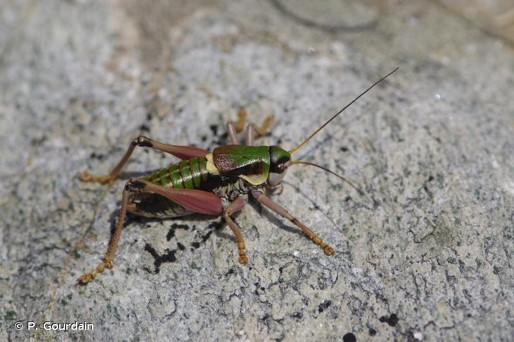
Anonconotus alpinus (Analote des Alpes)

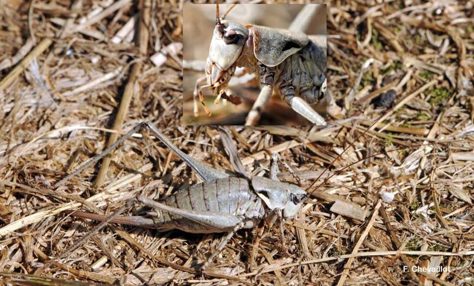
Antaxius pedestris (Antaxie marbrée)
Ralenti ×1,6

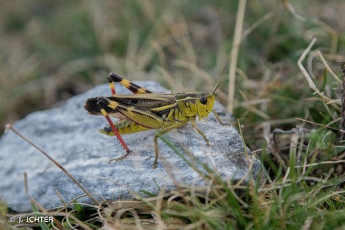
Arcyptera fusca (Arcyptère bariolée)

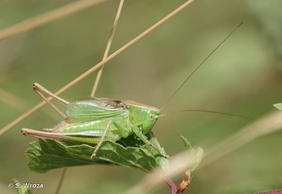
Bicolorana bicolor (Decticelle bicolore)

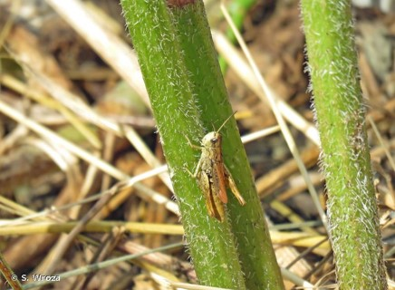
Chorthippus apricarius (Criquet des adrets)

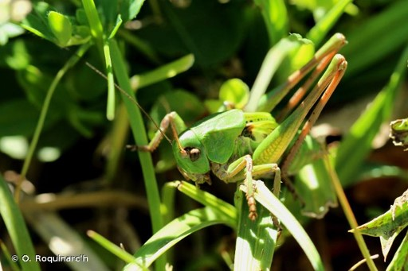
Decticus verrucivorus (Dectique verrucivore)

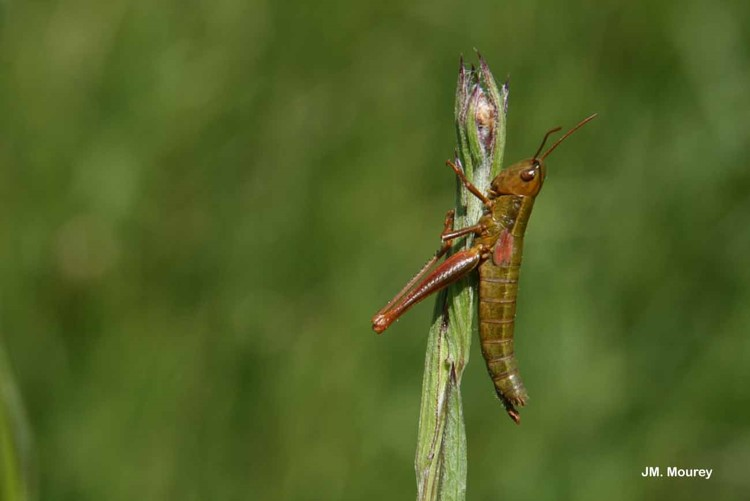
Euthystira brachyptera (Criquet des Genévriers)

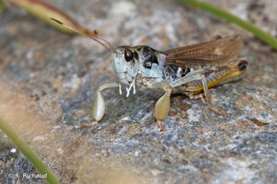
Gomphocerus sibiricus (Gomphocère Popeye)

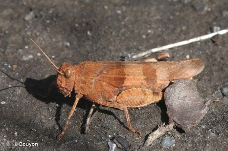
Oedipoda germanica (OEdipode rouge)

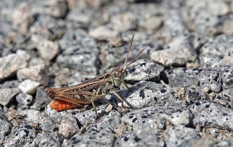
Omocestus haemorrhoidalis (Criquet rouge-queue)

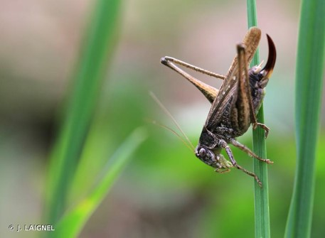
Platycleis albopunctata (Decticelle chagrinée)

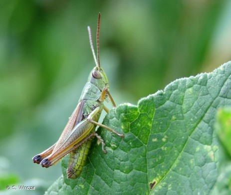
Pseudochorthippus parallelus (Criquet des pâtures)

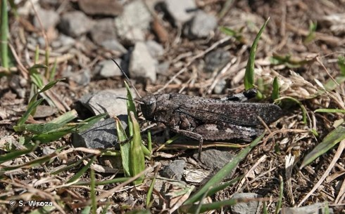
Psophus stridulus (OEdipode stridulante)

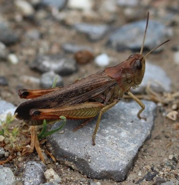
Stauroderus scalaris (Criquet jacasseur)

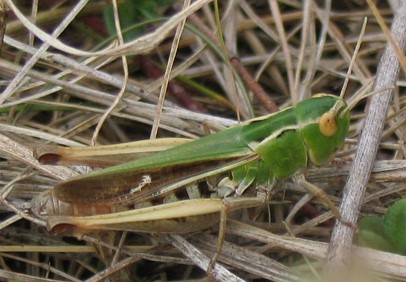
Stenobothrus lineatus(Sténobothre commun)

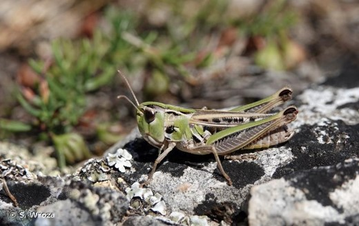
Stenobothrus nigromaculatus (Sténobothre bourdonneur)

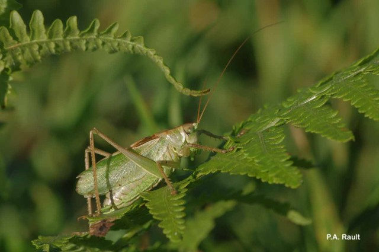
Tettigonia cantans (Sauterelle cymbalière)

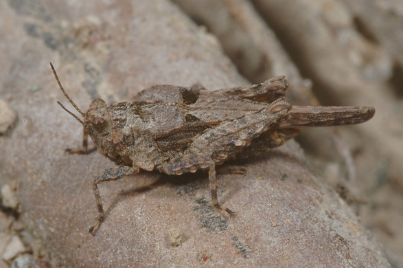
Tetrix depressa (Tétrix déprimé)
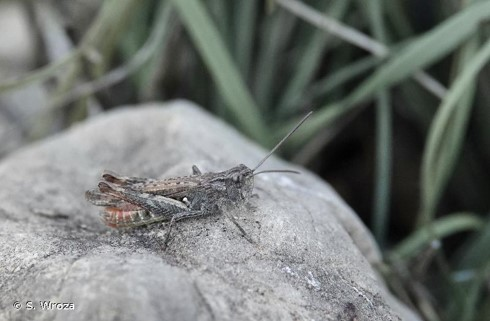
Gomphocerippus biguttulus (Criquet mélodieux)
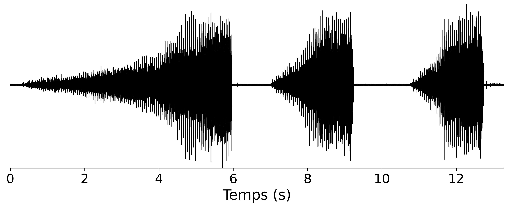
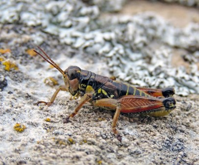
Podisma pedestris (Miramelle des moraines)

Liste des 20 espèces présentent sur notre site d’étude associé à leur chant et leur oscillogramme.
NTempi
Création de soundscapes de synthèse
Pour analyser les performances de l’indice Ntempi, nous avons créé des soundscapes de synthèses avec des nombres connues d’individus à partir de la liste des espèces présentes ci-dessus. L’objectif est de simuler des conditions d’écoute réalistes où plusieurs individus chantent simultanément à des distances variables. Pour cela, il était nécessaire de disposer d’une base de données d’enregistrements d’insectes. Nous avons téléchargé, via la plateforme ECOSoundSet, une base de données regroupant l’ensemble des espèces d’insectes recensées lors du relevé orthoptères réalisé sur la RNCFS de Belledonne en 2024.
- Synthèse d’un soundscape avec 5 individus.
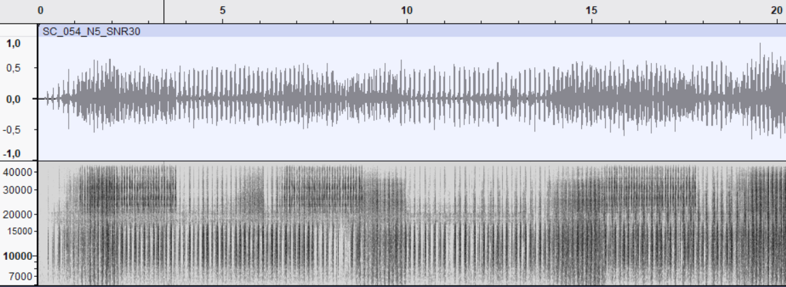
- Synthèse d’un soundscape avec 10 individus.
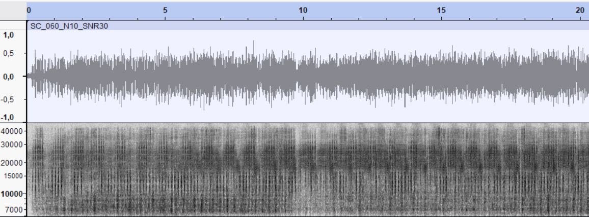
- Synthèse d’un soundscape avec 15 individus.
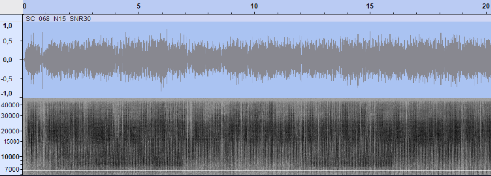
NoteDétails methodo pour la création de soundscapes de synthèse
Téléchargement de la base de données d’audio insectes
Pour telecharger une base de données d’enregistrement d’orthoptères, nous avosn utilisé la plateforme ECOSoundSet qui regroupe plusieurs bases de données. Nous nous sommes donc restreint à la liste des 20 insectes relevés dans la RNCFS.
Un premier tri a ensuite été appliqué aux enregistrements : les fichiers présentant une fréquence d’échantillonnage inférieure à 96 kHz ainsi que ceux d’une durée inférieure à 30 secondes ont été exclus. Les enregistrements restants ont ensuite été analysés une première fois à l’aide de NTempi, afin de ne conserver que ceux présentant une valeur de NTempi égale à 1.
| Insectes relevés sur la RNCFS en 2024 | Nombres d’enregistrements téléchargés | Nombres d’enregistrements utilisés |
|---|---|---|
| Anonconotus alpinus | 27 | 6 |
| Antaxius pedestris | 89 | 6 |
| Arcyptera fusca | 60 | 2 |
| Bicolorana bicolor | 231 | 18 |
| Chorthippus apricarius | 191 | 2 |
| Decticus verrucivorus | 282 | 50 |
| Euthystira brachyptera | 57 | 8 |
| Gomphocerus sibiricus | 65 | 7 |
| Oedipoda germanica | 1 | 0 |
| Omocestus haemorrhoidali | 44 | 2 |
| Platycleis albopunctata | 304 | 68 |
| Pseudochorthippus parallelus | 309 | 20 |
| Psophus stridulus | 35 | 0 |
| Stauroderus scalaris | 106 | 8 |
| Stenobothrus lineatus | 136 | 11 |
| Stenobothrus nigromaculatus | 49 | 4 |
| Tettigonia cantans | 347 | 17 |
| Tetrix depressa | 0 | 0 |
| Gomphocerippus biguttulus | 0 | 0 |
| Podisma pedestris | 0 | 0 |
Prétraitement des fichiers audio individuels
Chaque enregistrement d’insecte subit d’abord une série de transformations standardisées. Les fichiers stéréo sont convertis en mono par moyennage des canaux. Un filtre passe-haut à 6 kHz est appliqué. Et ous les enregistrements sont tronqués ou complétés par des zéros pour atteindre une durée fixe de 30 secondes. Une normalisation par pic est effectuée pour que chaque signal atteigne la même amplitude maximale.
Sélection et mélange des signaux
Pour chaque soundscape, le nombre total d’insectes est tiré aléatoirement entre 1 et 30 individus. Les espèces présentes sont sélectionnées au hasard parmi celles disponibles, et le nombre d’individus est réparti équitablement entre elles. Les fichiers audio sont ensuite tirés aléatoirement dans le pool de chaque espèce, avec possibilité de répétition si nécessaire. Lors du mélange, chaque signal reçoit un gain aléatoire compris entre 0,7 et 1,0 pour simuler des distances variables entre les insectes et le microphone. Le signal composite est ensuite normalisé pour maintenir une intensité globale constante, avec une protection anti-saturation pour éviter l’écrêtage.
Ajout de bruit et sauvegarde
Un bruit blanc est ajouté au soundscape selon le choix de SNR visé.
Evaluation de Ntempi avec des soundscapes de synthèse
Test paramètriques de NTempi
Création de 800 soundscapes avec entre 1 et 30 insectes. Les paramètres de NTempi ont été optimisés et finalement bloqués sur les paramètres ci-dessous.
NoteChoix des paramètres de Ntempi
- Séparation spectrale (identification des bandes fréquentielles)
- bsize = 5000 Hz : Largeur des bandes fréquentielles.
- t = 5×10⁻¹¹ : Seuil de détection des pics spectraux.
- Novelty curve (détection des événements temporels)
- Q = 0.6 : Quantile de discrétisation. ↓ = garde plus d’événements (sensible au bruit), ↑ = plus sélectif
- gamma = 10 : Compression logarithmique du spectrogramme
- Calcul du temprum (extraction des périodicités)
- Na = Fs0/H0*k : Taille de fenêtre FFT. Détermine la résolution temporelle : résolution = (Fs/H/Na)×60
- BPMTheta = (100, 6100) BPM : Plage de tempos biologiquement plausibles
- Détection de tempos (identification des pics et filtrage)
- thresh = 0.28 : Seuil d’amplitude absolu dans le temprum. ↓ = détecte plus de tempos
- prom_c = 0.33 : Proéminence relative (fraction du pic max). ↓ = détecte pics faibles, ↑ = seulement pics dominants
- eps = 60 BPM : Marge pour la détection d’harmoniques (ex: 100 et 200±eps BPM). ↓ = strict
- delta = 60 BPM : Marge pour fusionner tempos similaires entre bandes. ↓ = sépare variations fines, ↑ = fusionne variations d’un même individu
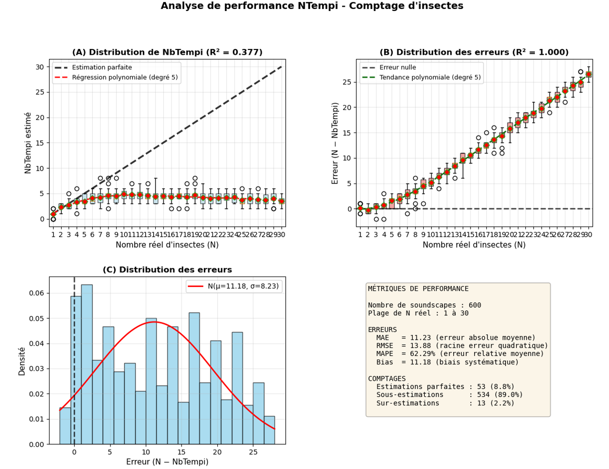
Analyse de NTempi sur les soundscapes de synthèse
Formules des métriques : \[ \mathrm{MAE} = \frac{1}{N} \sum_{i=1}^{N} \left| N_{\text{réel}, i} - N_{\text{Tempi}, i} \right| \]
\[ \mathrm{RMSE} = \sqrt{ \frac{1}{N} \sum_{i=1}^{N} \left( N_{\text{réel}, i} - N_{\text{Tempi}, i} \right)^2 } \]
\[ \mathrm{Biais} = \frac{1}{N} \sum_{i=1}^{N} \left( N_{\text{réel}, i} - N_{\text{Tempi}, i} \right) \]
NoteAnalyse complémentaire de Ntempi
Analyse de Ntempi pour des soundscapes créés uniquement à partir d’enregistrement d’une unique espèce.
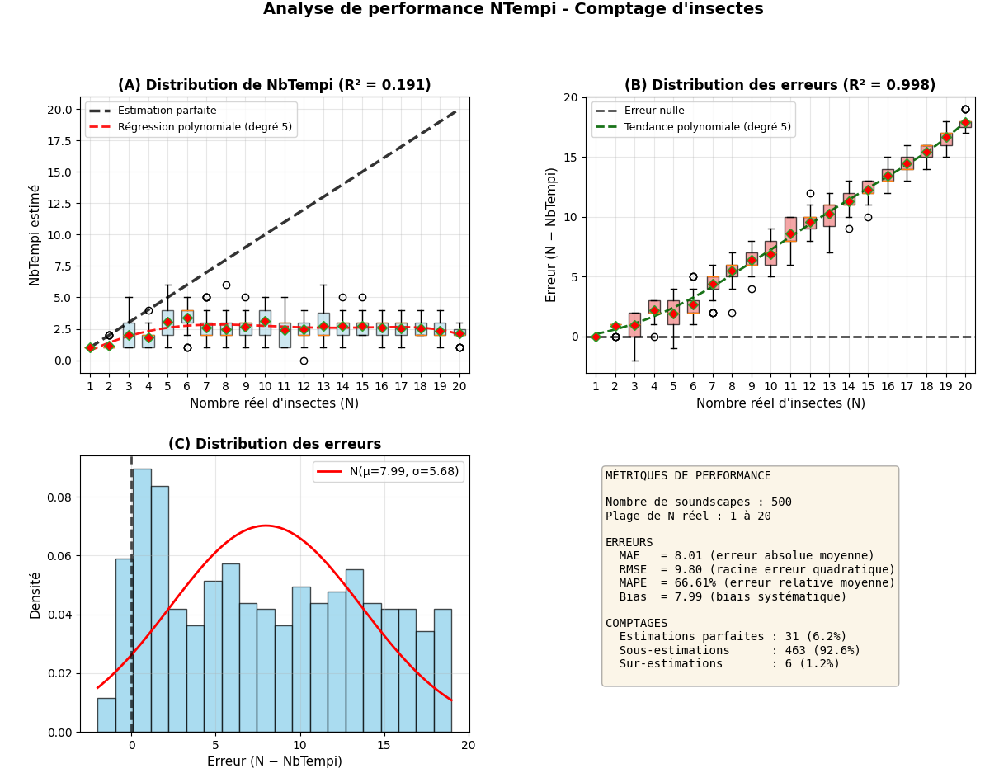
Analyse de Ntempi pour des soundscapes créés uniquement à partir d’enregistrement de Decticus verrucivorus
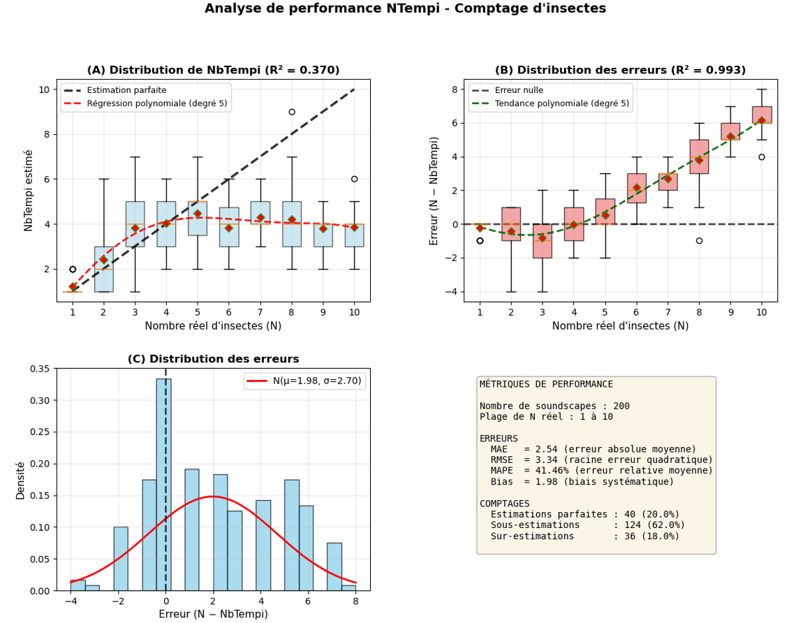
Analyse de Ntempi pour des soundscapes créés uniquement à partir d’enregistrement de Platycleis albopunctata
l’analyse faite sur Platycleis albopunctata ressemble fortement à celle sur des soundscapes créés avec des espèces différentes, la variabilité des tempos parait assez grande intra-espèce (exemple de tempos relevés pour un soundscape de 10 insectes avec étude préalables sur individu séparé : 180,180,1082,1143,1263,180,721,601,180,721 L’étude sur Decticus verrucivorus semble différente, il arrive à moins bien séparé les insectes et nous arrivons à un plateau de maximum 3 insectes, et effectivement la variabilité des Tempos est plus faible : 541,360,300,541,601,601,541,601,541
Effet du SNR
5 combinaisons de 3 insectes sont utilisés : pour chaqune d’entres elles, 10 soundscapes sont crées avec un SNR variables. On observe une stabilité forte du Ntempi malgré un SNR plus mauvais

Performance de Ntempi sur les soundscapes de synthèses avec un pool de 15 espèces.
Effet du décalage temporelle
Une combinaison de 4 insectes est choisies, nous allons tester le décalage des fichiers. le soundscape créé par ces 4 insectes donne volontairement NTempi=2. Nous appliquerons une decalage sequentiel de chaque fichier : 50 soundscapes avec décalages progressifs : Décalage entre fichiers : 10 ms (0.01s). Nous avons choisis le décalage pour etre le plus petit possible du tempo géré par NTempi.
Le resultat est similaire pour les 50 soundscapes. Ntempi=2.
Ntempi sur nos enregistrements réels
Les enregistrements sont préalablement filtrés pour atténuer le bruit de fond.
Un filtre coupe-bande est appliqué avec une fréquence de coupure de 6000Hz puis un filtrage du bruit stationnaire est appliqué entre 6000 et 48000Hz. La méthode retenue est le lissage gaussien 2D (avec la fonction remove_background de scikit maad). Application d’un filtre gaussien bidimensionnel sur le spectrogramme pour estimer le bruit de fond, puis soustraction spectrale - Filtrage simultané dans les dimensions temporelle et fréquentielle. D’autres filtres ont été testé dont un particulèrement : remove_background_along_axis dont le principe est le calcul du profil de bruit médian pour chaque fréquence sur toute la durée de l’enregistrement, puis soustraction - Filtrage unidimensionnel le long de l’axe fréquentiel. Ce filtrage très efficace est trop fort et efface beaucoup de nos bruits d’insectes.
NoteNtempi non lissé
Distribution de Ntempi par rapport au Leq (avec coloration en fonction de la saturation.
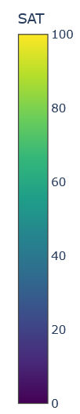

Activité.

Régression logistique sur 4 variables.